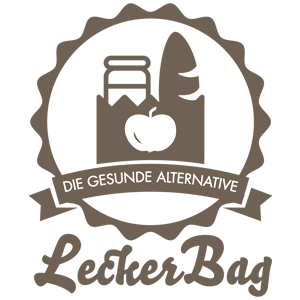

<!DOCTYPE html> 
<html> 
    <head> 
        <meta charset="utf-8">         
        <title>Leckerbag - Die gesunde Alternative</title>         
        <meta name="viewport" content="width=device-width, initial-scale=1.0">         
        <meta name="description" content="Beschreibung der Seite">         
        <meta name="author" content="Paul Kozakiewicz">         
        <link href="//maxcdn.bootstrapcdn.com/font-awesome/4.3.0/css/font-awesome.min.css" rel="stylesheet">         
        <link href="css/bootstrap.css" rel="stylesheet">         
        <link href="css/style.css" rel="stylesheet" type="text/css">         
        <link href="css/bootstrap-responsive.css" rel="stylesheet">
        <link href='http://fonts.googleapis.com/css?family=Roboto:400,100,300,900,500' rel='stylesheet' type='text/css'>         
    </head>     
    <body> 
        <div class="row">
            <div id="footer_c">
                <div class="container">
                    <div class="row">
                        <div class="text-center col-md-3" data-pg-collapsed="">
                                                         
                        </div>
                        <div class="col-md-9">
                            <div class="row">
                                <div class="col-md-6" data-pg-collapsed="">
                                    <h4>Julius-Maximilians-Universität Würzburg</h4> 
                                    <p class="bodytext">Sanderring 2<br>97070 Würzburg<br>Tel. 0931/31-0<br>Fax: 0931/31-82600&nbsp;</p>
                                </div>
                                <div class="col-md-6" data-pg-collapsed="">
                                    <h4>LeckerBag - Ein Projekt von:<br></h4> 
                                    <p>Lehrstuhl für Wirtschaftsinformatik und Systementwicklung</p>
                                    <p class="bodytext"></p>
                                    <p class="bodytext">Hubland Nord, Gebäude 32<br>Emil-Fischer-Straße 32<br>D-97074 Würzburg &nbsp;</p>
                                </div>
                            </div>
                        </div>
                    </div>
                    <hr class="hr_line hr_line_ext_footer">
                    <div class="row">
                        <div class="col-md-6 col-sm-6 col-xs-6 col-lg-6">
                            <p>© LeckerBag, Uni-Würzburg. All rights reserved. <a href="impressum.html">Site credits</a><br></p> 
                        </div>
                        <div class="col-lg-6 col-md-6 col-sm-6 col-xs-6 text-right">
                            <a>info@leckerbag.de</a>
                        </div>
                    </div>
                </div>
            </div>
        </div>         
        <!-- Ende des Dokumentes -->         
        <script src="js/jquery.js"></script>         
        <script src="js/bootstrap.js"></script>         
        <script src="js/functions.js"></script>         
    </body>     
</html>